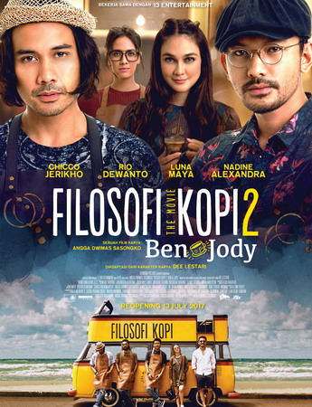

Selamat Datang!
Ngopiyuk! adalah kumpulan catatan dan podcast seputar filosofi kopi yang belum pernah anda ketahui.
Halo! saya Fajar. hanya sharing" ringan kepada kalian. Selamat membaca blog, mendengarkan podcast , dan mengubah dunia jadi sedikit lebih baik! Kalau menurut kamu ngopiyuk! bisa bantu orang lain, jangan lupa dishare ke teman-temannya!
Saya merekomendasikan menonton film ini!

Filosofi Kopi 2: Ben & Jodi adalah film Indonesia tahun 2017 yang disutradarai oleh Nirwan Dewanto. Film tersebut dibintangi oleh Chicco Jerikho, Rio Dewanto, Luna Maya, Nadine Alexandra, dan Ernest Prakasa. Film tersebut tayang perdana pada 13 Juli 2017. Film tersebut adalah sekuel dari film Filosofi Kopi.
Tonton online /
Unduh